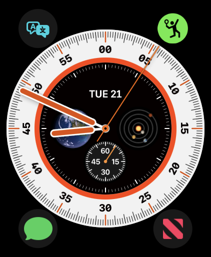
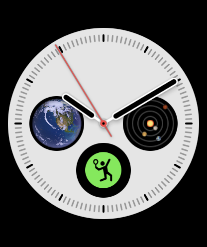

Score de tennis réel
Suivez automatiquement 0–15–30–40, égalité, avantage, jeux, sets et tie-breaks avec de grandes cartes faciles à toucher.
Tennis Score Wizard transforme l’Apple Watch en tableau de score rapide pour les vrais matchs. Suivez les points, jeux, sets, tie-breaks, position de service, temps d’entraînement, fréquence cardiaque, historique et statistiques automatiques directement depuis votre poignet.
Télécharger sur App StoreUn flux pensé d’abord pour l’Apple Watch, avec commandes rapides, règles de tennis correctes, historique utile et analyse claire après le match.
Suivez automatiquement 0–15–30–40, égalité, avantage, jeux, sets et tie-breaks avec de grandes cartes faciles à toucher.
Après un match, History peut afficher les points, le service, le retour, les situations de pression, les tie-breaks et le déroulement du match, calculés à partir du score normal.
Enregistrez éventuellement un match comme entraînement Apple Health et consultez la fréquence cardiaque moyenne, maximale et les calories actives.
Utilisez le tirage au sort du serveur, l’aide de côté au service, Switch Server, Undo, la fin automatique du match et l’historique local.
Le parcours complet du match : configuration, enregistrement d’entraînement, score en direct, tie-breaks, matchs terminés, historique et statistiques automatiques.

Choisissez simple ou double, Best of 3 ou Best of 5, et la règle du set avant le début du match.

Choisissez le premier serveur, utilisez le tirage au sort, activez Record Workout et démarrez le match depuis un seul écran.

Marquez avec de grandes cartes tout en gardant visibles serveur, côté de service, sets, statut d’entraînement et fréquence cardiaque.

Suivez les points du tie-break à 6–6 avec les mêmes commandes Apple Watch rapides et lisibles.

Quand le match est décidé, l’app affiche le vainqueur, le résultat des sets et un accès rapide à History ou Done.

Consultez victoires, défaites, matchs arrêtés, taux de victoire et matchs enregistrés directement sur Apple Watch.

Ouvrez un match enregistré pour consulter score, jeux, durée, points totaux, statut d’entraînement et contexte d’un match arrêté.

Les entraînements enregistrés peuvent afficher la fréquence cardiaque moyenne, maximale et les calories actives après sauvegarde du match.

Consultez les points totaux, les points gagnés par chaque côté, les jeux de service et les points gagnés au service.

Consultez les jeux de retour, les points en retour, les balles de break sauvées et converties.

Consultez le jeu le plus long, les points moyens par jeu, le total des jeux et les tie-breaks gagnés ou perdus.
Lancez Tennis Score Wizard directement depuis le cadran de votre Apple Watch en un seul toucher.

Placez Tennis Score Wizard dans le coin du cadran pour un accès instantané avant le match.

Placez Tennis Score Wizard dans la zone ronde du cadran et commencez le score d'un simple toucher.
La version 1.2 ajoute des statistiques automatiques dans History. Elles sont calculées à partir de vos touches de score normales : pas besoin de saisir les aces, les coups gagnants, la longueur des échanges ou d’autres données.
Affiche le nombre total de points joués et le nombre de points gagnés par chaque côté. Un total de points serré signifie souvent que le match était plus disputé que le score des sets ne le suggère.
Affiche votre performance dans vos propres jeux de service. Les jeux de service sont les jeux où vous servez. Les points de service sont les points individuels joués sur votre service.
Affiche votre performance lorsque l’adversaire sert. Les jeux de retour gagnés sont des breaks. Les points gagnés en retour montrent à quelle fréquence vous gagnez des points sur le service adverse.
Les balles de break sauvées sont les balles de break auxquelles vous avez résisté sur votre service. Les balles de break converties sont les occasions gagnées lorsque l’adversaire servait.
Affiche le rythme du match : jeu le plus long, moyenne de points par jeu, nombre total de jeux et tie-breaks gagnés ou perdus.
Si Record Workout est activé et que l’autorisation Health est accordée, History peut afficher la fréquence cardiaque moyenne, maximale et les calories actives de l’entraînement tennis enregistré.
Voici comment lire des lignes de statistiques courantes après un vrai match.
Vous avez gagné 67 points et l’adversaire 72. Un petit écart signifie souvent que le match était plus serré que le score des sets ne le montre.
Vous avez servi dans 10 jeux et en avez gagné 3. Cela montre à quelle fréquence vous avez conservé votre service.
L’adversaire a servi dans 11 jeux et vous avez réalisé 6 breaks.
Vous avez fait face à 11 balles de break sur votre service et en avez sauvé 4.
Vous avez eu 13 occasions de breaker le service adverse et en avez converti 6.
Chaque jeu a duré environ 6 points en moyenne. Des valeurs plus élevées indiquent souvent des jeux plus longs et plus serrés.
Les matchs enregistrés avant l’ajout des statistiques automatiques peuvent ne pas inclure de statistiques. Les nouveaux matchs enregistrés avec la version 1.2 ou ultérieure peuvent inclure les nouvelles statistiques History.
L’historique des matchs reste local sur votre appareil. L’accès à Health est optionnel et utilisé uniquement pour l’enregistrement d’entraînement et les détails liés à la fréquence cardiaque.
Choisissez simple ou double, Best of 3 ou Best of 5, la règle du set, le premier serveur manuellement ou par tirage au sort, activez éventuellement Record Workout, puis commencez le score.
Activez Record Workout lors de la configuration. Si vous autorisez Apple Health, le match peut être enregistré comme entraînement de tennis et sauvegardé dans Apple Health.
La fréquence cardiaque en direct est affichée pendant les entraînements enregistrés lorsque l’autorisation Apple Health est accordée et que les données sont disponibles depuis l’Apple Watch.
Pendant un match en direct, Menu donne accès à Switch Server, à l’arrêt d’un match non terminé, à l’historique ou au démarrage d’un nouveau match.
Undo annule le dernier point marqué et restaure l’état précédent du match, y compris points, jeux, sets, serveur, position de service, état du tie-break et compteurs statistiques.
Lorsque vous servez, la balle de tennis indique le côté depuis lequel servir. Lorsque l’adversaire sert, elle indique le côté de service adverse depuis la perspective de votre montre.
Les matchs enregistrés utilisent une notation tennis compacte pour que les résultats et statistiques restent lisibles sur Apple Watch.
Win signifie que vous avez gagné le match terminé aux sets. Loss signifie que l’adversaire a gagné le match terminé aux sets.
Stopped signifie que le match a été sauvegardé avant sa fin normale. L’app conserve le contexte réel : sets, jeux, durée, points et statistiques collectées.
S1, S2 et S3 signifient Set 1, Set 2 et Set 3. Par exemple, S1 6–3 signifie que le premier set s’est terminé 6 jeux à 3.
TB affiche les points du tie-break dans un set à 7–6. Par exemple, 7–6 · TB 7–3 signifie que le set a été gagné 7–6 et le tie-break 7–3.
Si un match arrêté présente une avance claire aux sets, History affiche qui menait aux sets. Si les sets sont à égalité, l’app compare les jeux puis les points de tie-break disponibles.
Pour les matchs arrêtés, le set en cours est sauvegardé s’il avait commencé, afin de conserver le vrai contexte du match, par exemple S3 0–1.
Non. L’historique des matchs est stocké localement sur votre appareil. L’app ne nécessite pas de compte et n’envoie pas votre historique à un serveur.
Non. L’accès à Health est optionnel. Vous pouvez compter les matchs sans enregistrer d’entraînement.
Non. Les statistiques sont générées à partir des touches de score normales. L’app ne demande pas de saisir les aces, coups gagnants, fautes directes ou longueur des échanges.
Oui. L’app prend en charge simple, double, Best of 3, Best of 5, sets avec avantage et sets avec tie-break.
Oui. Les matchs enregistrés peuvent être supprimés depuis l’écran History.
L’historique des matchs est stocké localement sur votre appareil. L’app ne nécessite pas de compte et ne transmet, ne vend ni ne partage de données personnelles.
L’accès à Apple Health est optionnel et utilisé uniquement pour enregistrer des entraînements de tennis et afficher la fréquence cardiaque en direct pendant les matchs enregistrés avec autorisation.
Contact : tennisscorewizard@gmail.com